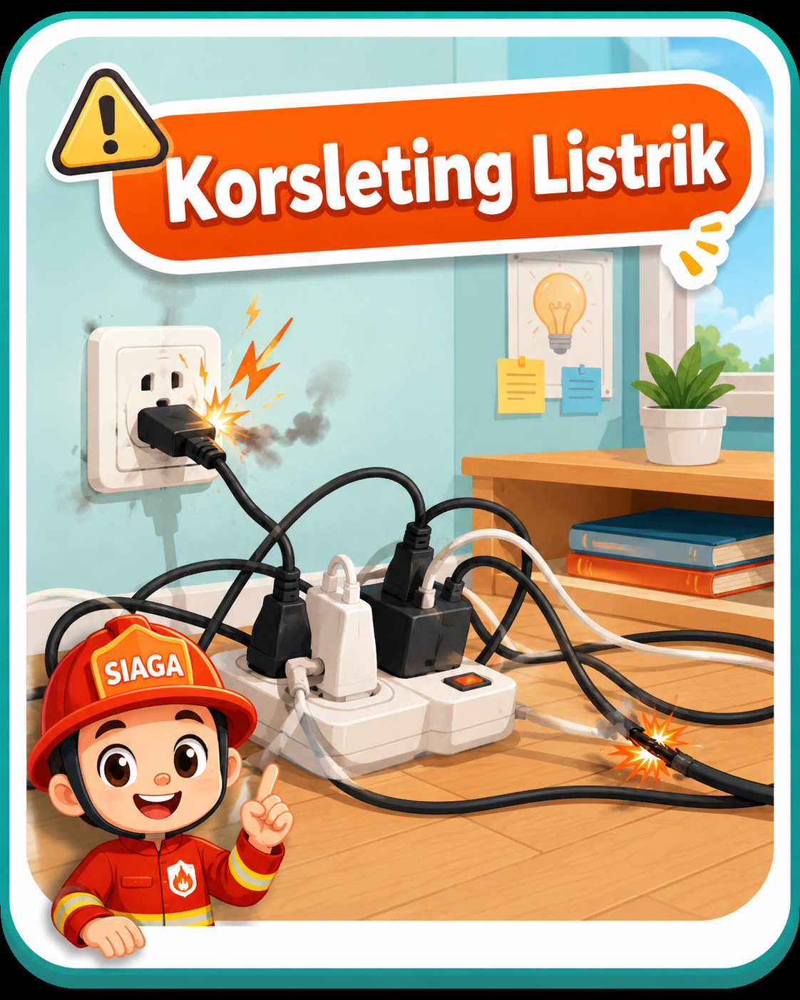
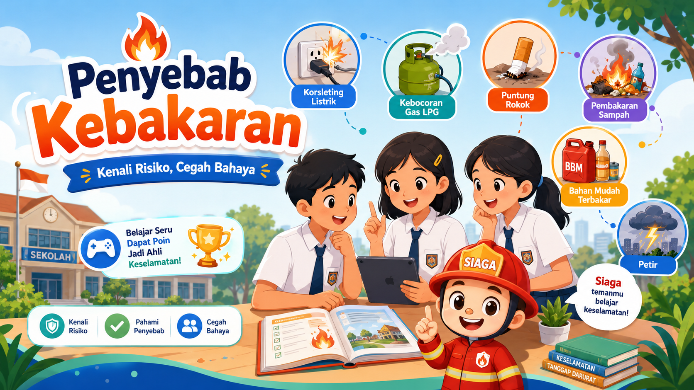
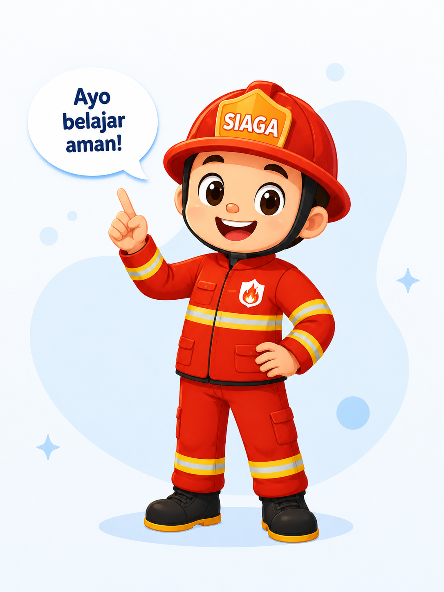
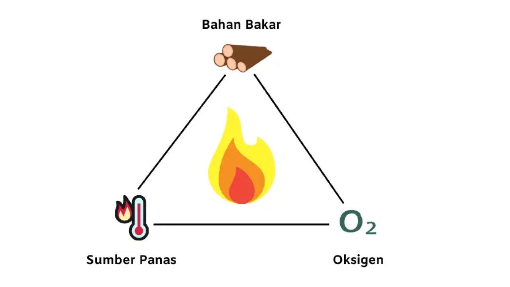
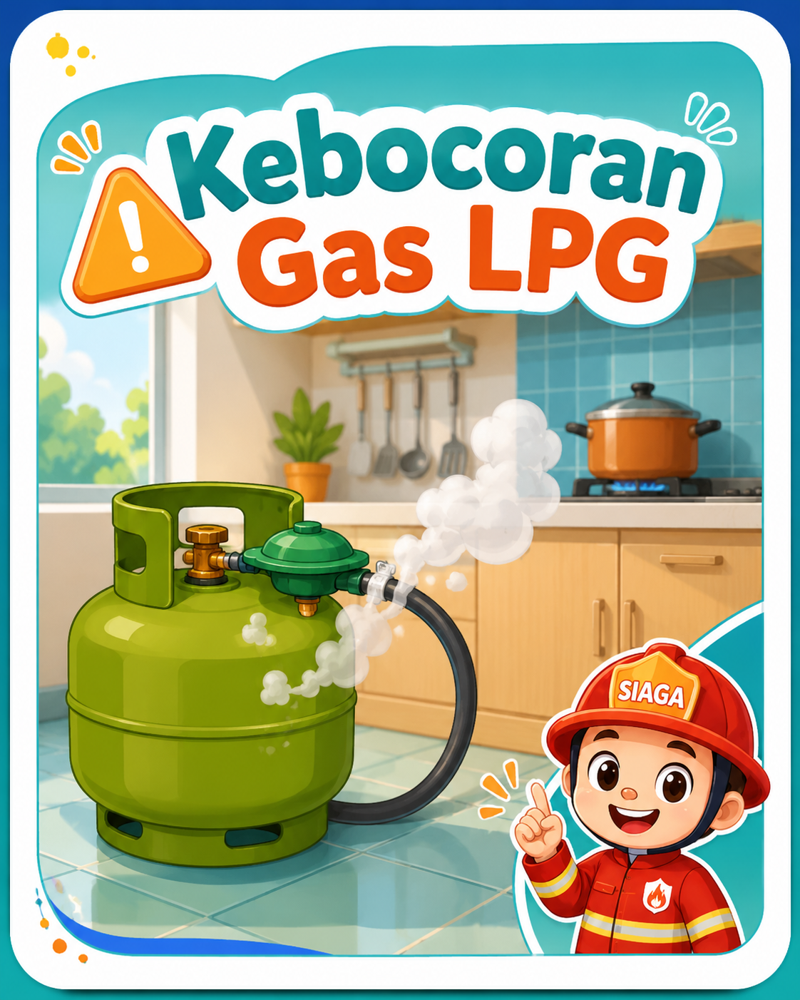
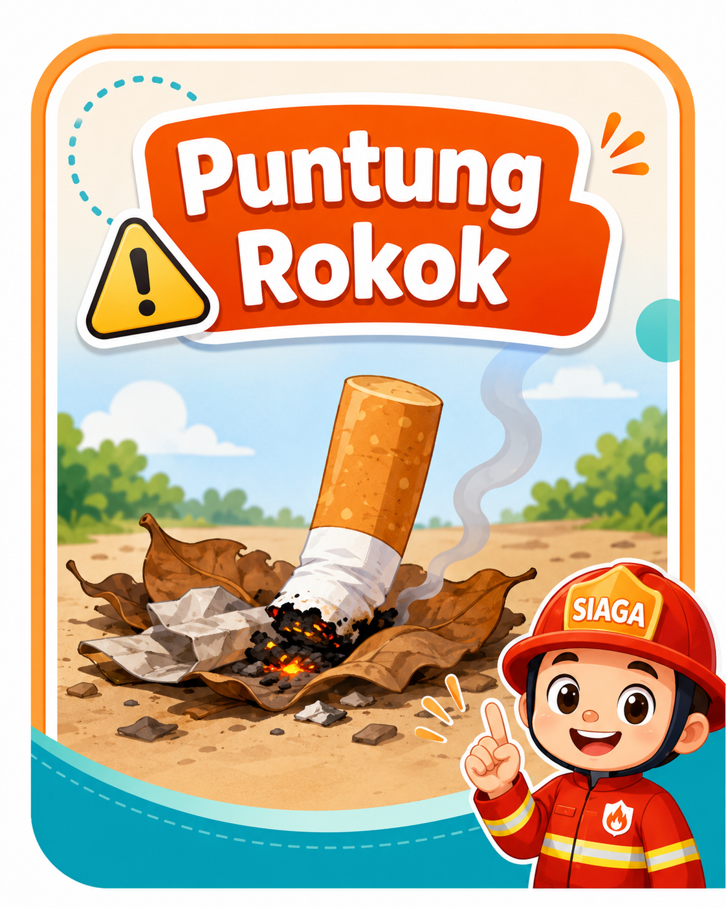
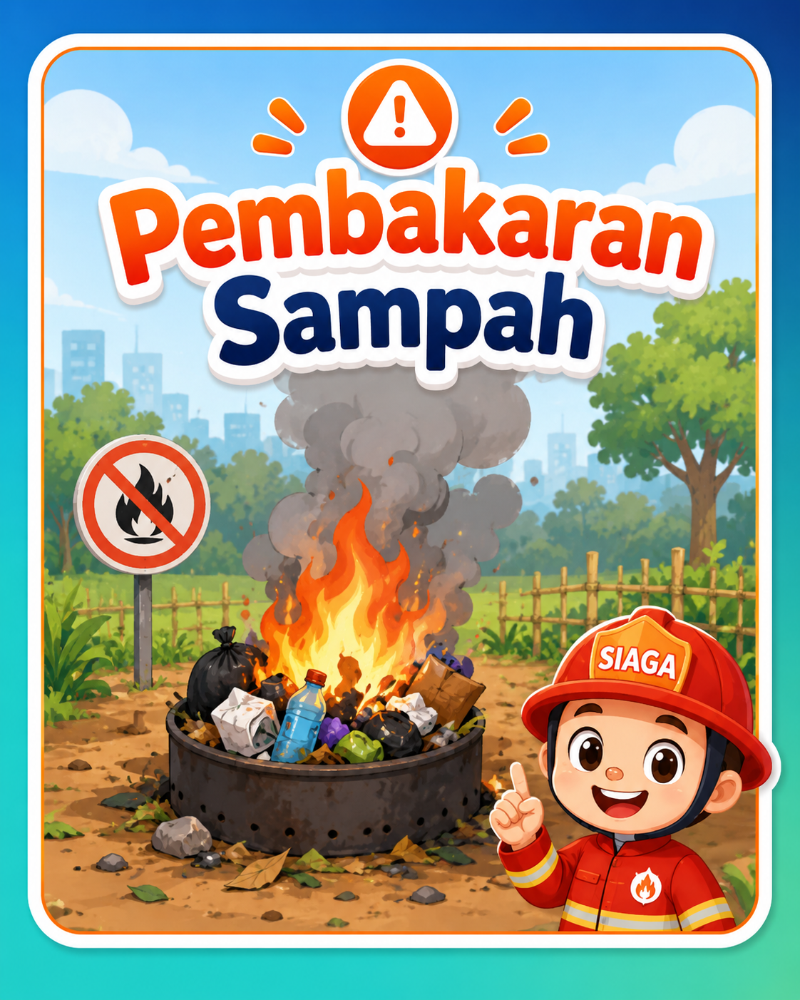
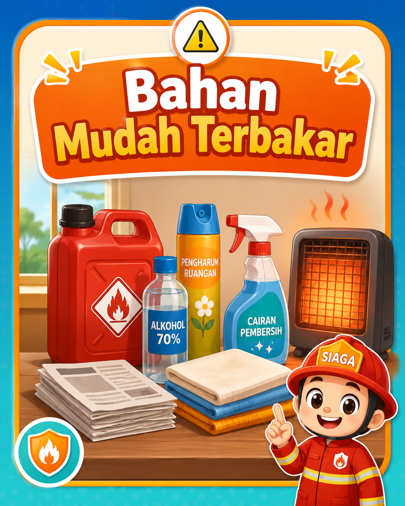
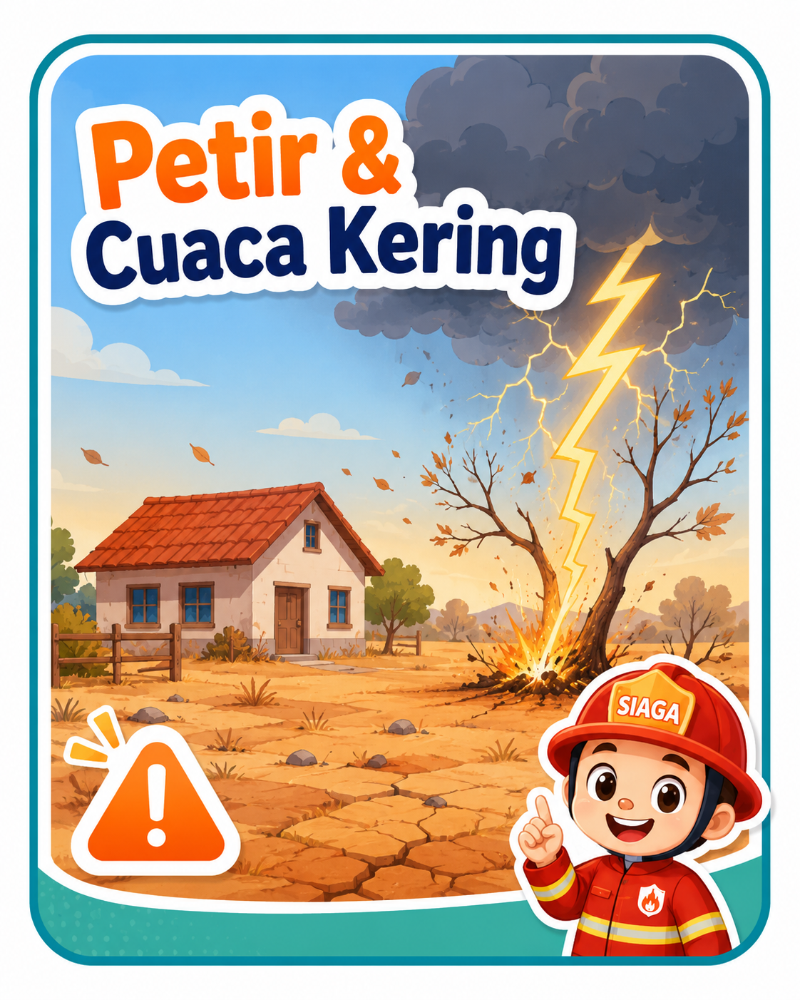

Penyebab #1 (61%)
Korsleting Listrik
Penggunaan steker bertumpuk, kabel terkelupas, atau instalasi yang tidak standar.
Pelajari mengapa kebakaran bisa terjadi, mulai dari korsleting listrik hingga faktor cuaca. Mari jadikan lingkungan sekolah dan rumah kita lebih aman!
Target: Siswa dapat mengidentifikasi risiko dan melakukan pencegahan.


Secara ilmiah, kebakaran hanya terjadi jika tiga unsur ini bertemu. Jika salah satu dihilangkan, api tidak akan menyala atau akan padam.
"Tugas utama kita dalam pencegahan adalah memutus salah satu sisi dari segitiga ini."

Berdasarkan data BMKG, berikut adalah penyebab paling umum di Indonesia. Klik pada kartu untuk melihat detail lebih lanjut!

Penggunaan steker bertumpuk, kabel terkelupas, atau instalasi yang tidak standar.

Selang gas getas, regulator kendur, atau ventilasi dapur yang tertutup rapat.

Membuang puntung yang masih menyala sembarangan, apalagi di tempat sampah atau tumpukan daun.

Membakar sampah di area terbuka saat cuaca kering dan berangin dapat memicu kebakaran besar.

Menyimpan bensin, thinner, atau aerosol dekat dengan sumber panas (kompor/lampu).

Sambaran petir ke bangunan tinggi atau kondisi kekeringan ekstrem yang membuat tanaman mudah terbakar.
Siswa SMP bukanlah pemadam api, tapi "Penjaga Keselamatan". Ketahui apa yang BOLEH dan TIDAK BOLEH dilakukan.
Uji pengetahuanmu tentang materi di atas. Pilih jawaban yang paling tepat!